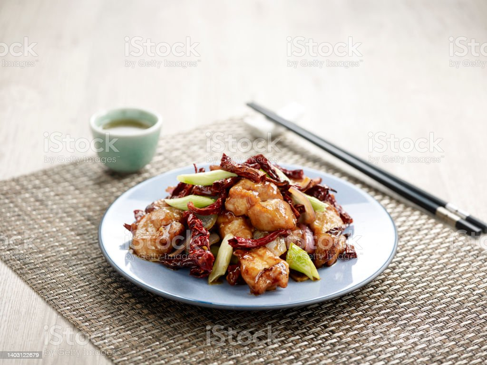

Gong Bao Ji Ding

Chicken Gong Bao
traditional chinese dish from the "Sichuan Province"
Ingredients
- 1 lb chicken breast
- 1 tsp salt
- 1/2 tsp onion powder
- 2 tsp Chinese cooking wine
- 1 egg white
- 1.5 tbsp cornstarch
- 1 tbsp Dou Ban Jiang (broad bean chili sauce)
- 1 tbsp light soy sauce
- 1.5 tbsp black vinegar
- handful red dried chilies
- 1 tbsp Sichuan peppercorns
- 1 tbsp garlic
- 1 tsp ginger
- 2 tbsp brown sugar
- 1/2 cup water
- 2 tsp cornstarch
- 4 pieces white part of scallion
- 1/3 cup roasted peanuts
Steps
- Cut 1 pound of chicken breast into 1/2 inch cubes. Marinade it with 1 tsp of salt, 1/2 tsp of onion powder, and 2 tsp of Chinese cooking wine. Then coat the chicken with 1.5 tbsp of cornstarch and 1 egg white. Keep mixing it until it gets to a creamy and velvety texture. Set it aside for 20 minutes.
- The cornstarch and egg white combination is a technique in Chinese cuisine, known as velveting. It creates a starchy layer that can preserve the moisture of meat while cooking. Which leads to the juicy, tender meat.
- Dice 1 tbsp of Sichuan peppercorns. Cut a handful of red dried chilies into short pieces. Roughly diced 4 pieces of white parts of the scallion. Prepare 1 tbsp of minced garlic, and 1 tsp of minced ginger.
- Heat your wok until it is smoking. Add a generous amount of oil. Give it a toss so the oil covers the bottom. Wait for it to smoke. That means the wok is hot enough. Then add the chicken. Spread the meat so most pieces are touching the bottom of the wok. Do not stir and flip the meat or else it will stick to the wok immediately. When cooking with a carbon steel wok, you have to wait and let one side of the meat to sear. Once it is nice and golden, the wok will release the food easily.
- Once the chicken is cooked and you got some nice brown color. Turn off the heat and take it out.
- Drizzling in a little more oil to the wok along with 1 tbsp of Sichuan Dou Ban Jiang. Stir this on low heat for a couple of minutes. When you see all the oil becomes a red-orange color, add the garlic, ginger, diced Sichuan peppercorn, red dried chilies and 2 tbsp of brown sugar. This is an extremely flavorful dish. The purpose of the sugar is to balance all the tanginess. You just stir until the sugar melts. Introduce the chicken back into the wok. Add the seasonings - 1 tbsp of soy sauce, 1.5 tbsp of Chinese black vinegar and a tsp of dark soy sauce. Pouring some cornstarch water and stir immediately.
- When the sauce thickens, throw in the toasted peanuts and the scallions. Toss everything together. Taste it to adjust the flavor. Mine does need one more splash of vinegar. Give it a final stir and you are ready to enjoy.